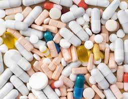
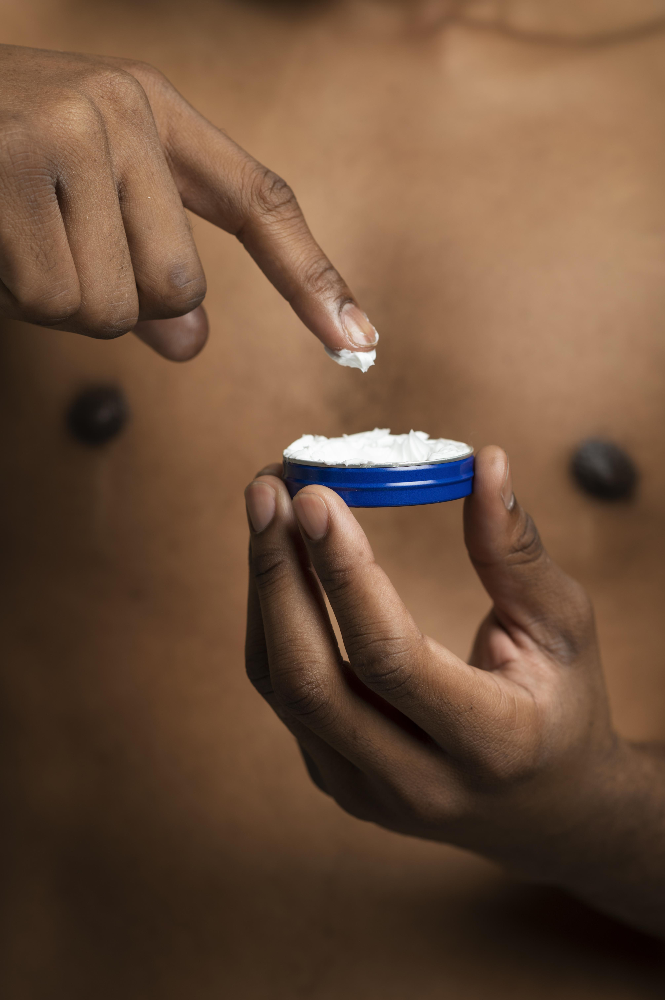

ILLICIT DRUGS
An illicit drug is one that is illegal to have(e.g methamphetamine,heroin),and the non-medical use
of drugs that are legally available such as pain killers and sleeping pills.
using illicit drugs can lead to health problems such as kidney problem etc



Risk of overdose
A.chronic disease( heart and liver problems)
B.blood-borne viruses(infections e.g hepatitis and hiv)
C.lower levels of social and emotional wellbeing(mental health problems)
D.also increases suicide